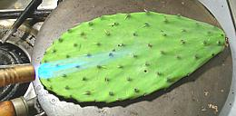
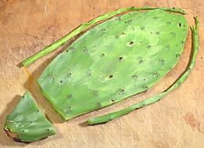
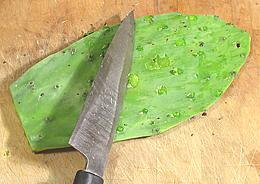
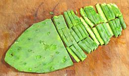
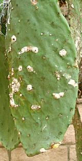

[Opuntia ficus-indica]
Nopales are the cactus pads (technically cladodes) of the same cactus that produces the Tuna fruit. This is an important vegetable in the dryer regions of Mexico and Central America where most vegetables won't grow. The photo specimen in the center was 11 x 5 inches, 3/8 inches thick in the middle and weighed 7-1/8 ounces. Pads that fall from the cactus to the ground will sprout roots wherever they touch the ground and will start a new cactus plant.
Opuntia cactus were imported into Australia in the late 1800s for use as natural fencing and to start a cochineal dye industry. They almost took over the continent, rendering 15,000 square miles of farmland useless. The moth Cactoblastis cactorum was imported from South America and single handedly destroyed the cactus invasion.
More on Cactus.
|

   |
Buying and StoringIn the US Southwest fresh nopales are available in produce markets, generally in two forms: whole pads (nasty spines and all) and pads prepared and cut into short strips. In other parts of the country these strips are available canned, and will work in recipes.Buy whole pads that are bright green and between 8 and 12 inches long. Really small pads will cook to mush and larger pads that have turned blue-green have tough skins and may be fibrous. Whole pads will keep, wrapped in the refrigerator, for a couple weeks as they are still fully alive. At room temperature they will lose water and start to shrivel. Bags of cut strips should be refrigerated if kept for more than a day, and used within a couple days. Outside the Southwest US, Mexico and Central America you'll probably have to buy canned strips, but these should work OK as the canning process is similar to the short boiling used to prepare strips for recipes. Preparation
Cochineal Insects If you have your own prickly pear cactus and they have little cotton-like puffs on the pads, they are infected with cochineal insects (Dactylopius coccus) which will eventually kill them if not treated. You can confirm this by scratching a few puffs and observe the bright red stain that results. The female cochineal insects exude carminic acid dye which is gathered by scraping off the insects and crushing them. This was the dye used to make the British Redcoats coats red, but today it is used as a natural food coloring (carmine, cochineal extract, natural red #4), and in lipstick and other cosmetics. Presuming you don't want to start a dye factory, small infestations
can be handled by scraping the insects off the pads. For larger
infestations spray a normal dilution of malathion with some dish washing
detergent added to assure the spray penetrates to the insects.
|
cc_nopalz 081003 - www.clovegarden.com
©Andrew Grygus - agryg@clovegarden.com - Photos on this
page not otherwise credited are © cg1 -
Linking to and non-commercial use of this page permitted